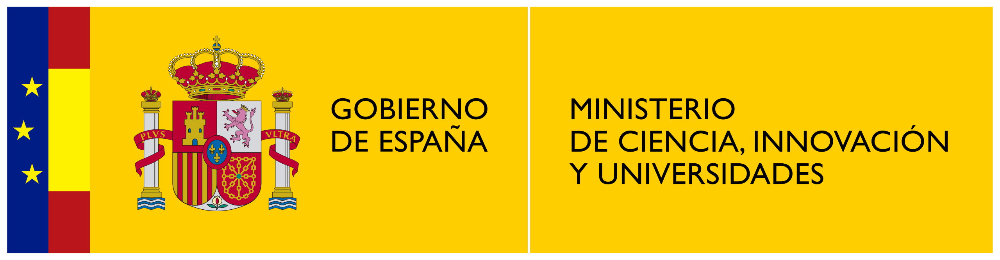
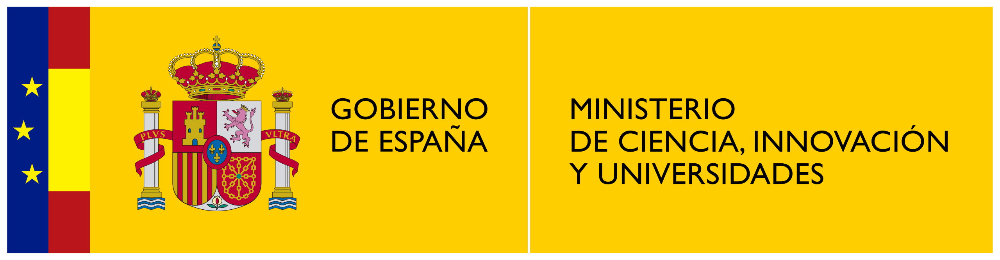

1 Introduction
MonitorEO-OBSNEV is a tool for analyzing satellite remote sensing–derived variables, based on Google Earth Engine, developed by the Sierra Nevada Global Change Observatory (University of Granada).
This user manual provides a comprehensive guide to the use of MonitorEO-OBSNEV, including a description of its functionalities, interface navigation, parameter selection, and results visualization.
This project has been developed within the framework of the work carried out by the Sierra Nevada Global Change Observatory, University of Granada, through the following projects:
EVEREST (PID2023-151939OB-I00), funded by the Ministry of Science, Innovation and Universities (MICIU) / State Research Agency (AEI) 10.13039/501100011033, and co-funded by the European Regional Development Fund (ERDF – European Union).
“Earth observations for the characterisation and monitoring of ecosystem functioning in Sierra Nevada (Spain)” (C-EXP-074-UGR23), co-funded by the ERDF 2014–2020 Program and the Regional Ministry of Economy, Knowledge, Enterprises and Universities of the Government of Andalusia.
 
